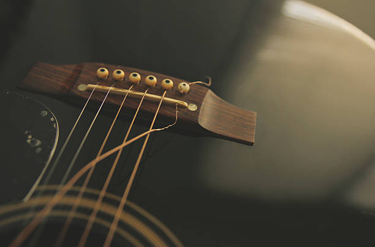

I am a 15-year-old musical artist currently living in Dallas, Texas. I have been creating music for awhile and want to release it. I spend most of my time studying bars, learning new instruments, and perfecting my sound. I wish to deliver a message of hope to the poeple in need. Weather their going through something like a break up or the death of a loved one. I want to share my stories and lyrichs to the world.
I am very devoted and I am constantly creating complex bars that best fit many peoples experiences in life. I was raised in Forney and moved to Rowlet in 2014. I live with my five brothers and two healthy parents who have been married for twenty years. I hope that I will make it in this game and leave my mark. I have also been learning more about how to make music and how to produce it to the best of my abilities. I am just a kid who loves rapping and is ready to proove himself. My sound is inspired by Kendrick Lamar, JuiceWRLD, XXXTENTACION, DMX, The WU-Tang Clan, 2pac, B.I.G., Puff daddy, Eminem, NF, Chance the Rapper, Jimi Hendrix, The Beatles, Led Zeplin, BB King, Eric Clapton, and so much more. I believe that rap should take inspiration from all types of music. And I beleive that my greatest inspiration is my belief in God.  Go to Google